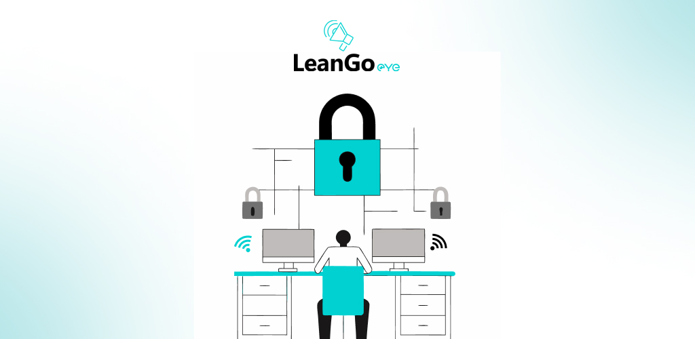
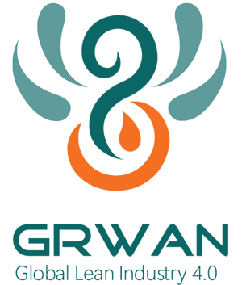
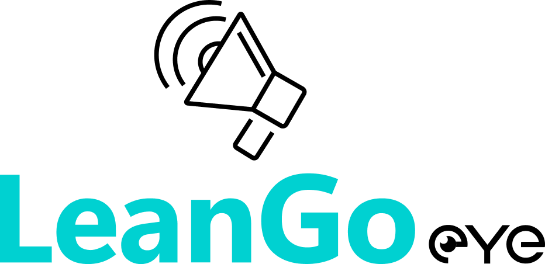
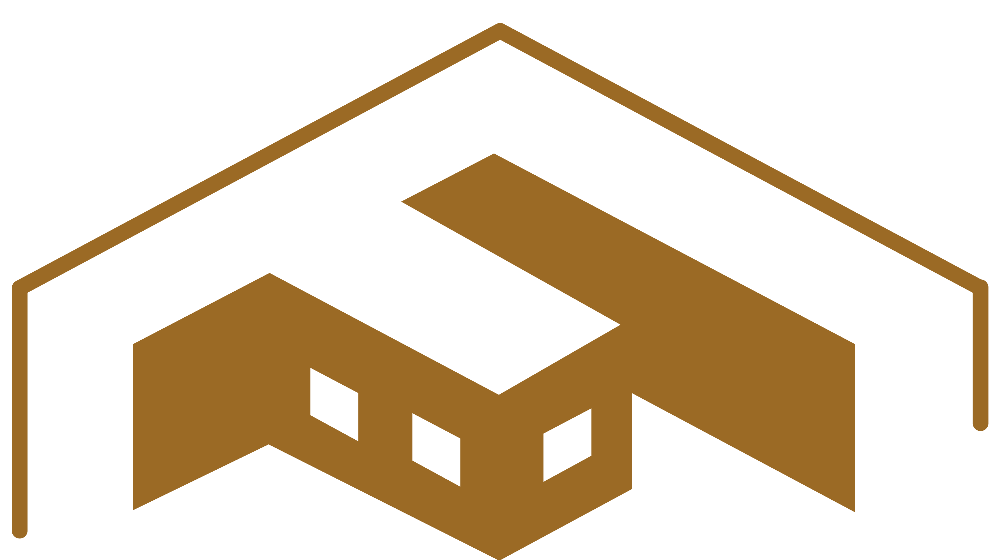
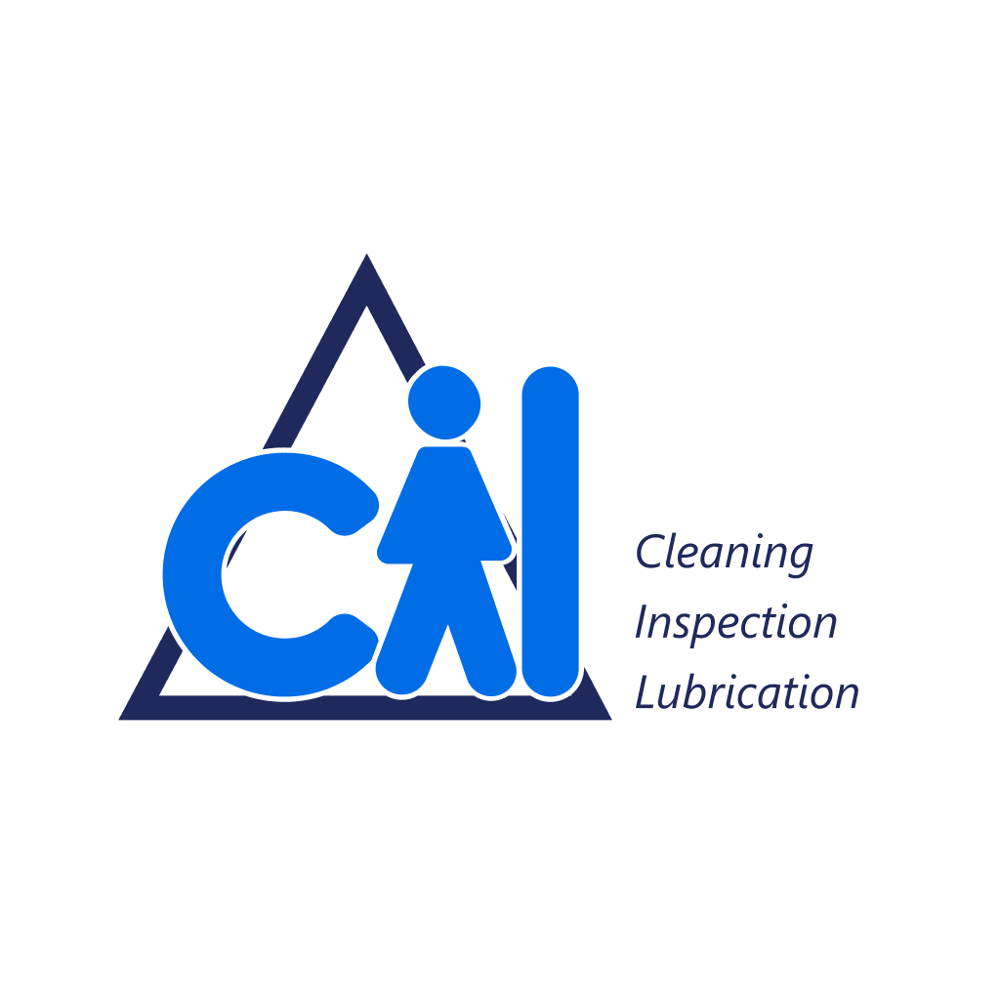

ENTERPRISE MOBILE · LEANGO01 — PRODUCT FAMILYGRWAN GROUP · GLI

LeanGo applications
Contributed to most of a family of enterprise and facility-management apps, including LeanGo Eye, FTE, FM, and CIL, with location, NFC, safety, messaging, and ticketing workflows.


